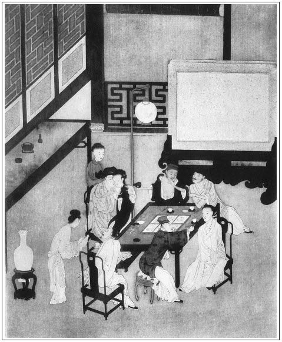

張回此回文字，上半明明是寫金蓮得寵，卻明是寫春梅得寵。蓋前文寫西門之於金蓮，已不啻如花如火矣。過此十三回內，又是瓶兒的事，是寫其如花如火者，又皆瓶兒之如花如火者也。然則必出春梅於瓶兒之前，見得與金蓮同功一體，生死共之，不得不先寫春梅也。夫先寫春梅。止雲收用而已，畢將春梅較蕙蓮、來爵媳婦之不若，何以為之《金瓶梅》哉！固知此與雪娥生波起浪，皆是作者特為春梅地步。見得此日春梅已迥非昔日之春梅，而雪娥夢夢，自不知之，宜乎有許多閒事。是故此回雖為金蓮私僕作火種，卻是為春梅作一番出落描寫也。
寫春梅，全帶三分傲氣，方與後文作照。
寫與雪娥淘氣處，偏不一番寫，偏用玉樓來截住上文，少歇另起，且必於第二日另起。人知金蓮進言之妙，不知作者且特特寫一玉樓與金蓮翻案，針鋒反映。見得作孽者自作孽，守分者自守分。然則如無風起浪之金蓮、木梅固不足論，而即如凡有炎涼之來，我不能自守，為共所動者，皆自討苦吃也。故後文處處遇金蓮悲憤氣苦時，必寫玉樓作襯。蓋作者特特為金蓮下針砭，寫出一玉樓，且特特為如金蓮者下針砭，始寫一玉樓也。
寫起事之因，作兩番寫。寫要雪娥，亦作兩番寫。淘氣，亦必春梅、雪娥鬧一番，再寫金蓮、雪娥鬧一番。見得如此淘氣，而月娘全若不聞，即共至其前，亦止云「我不管你」，又云「由他兩個」。然則寫月娘真是月娘，繼室真是繼室，而後文撒潑諸事，方知養成禍患，尾大難掉，悔無及矣。故金蓮敢於生事，此月娘之罪也。看他純用陽秋之筆，寫月娘出來。
一路寫金蓮用語句局住月娘，月娘落金蓮局中，有由來矣。其偏愛聲口如畫，又見不待瓶兒初來方見也。
欲寫梳攏桂姐，卻從子虛處出來。一者又照瓶兒，二者又點結會，三者又襯銀兒。子虛一邊，不言中的情事、又現成，又幽折，且並不費力。乃原在芙蓉亭會內，敘瓶兒後數語現成鍋灶中來。妙，妙！行文之樂，至此何如？
未寫瓶兒，乃又夾寫一桂兒。見得西門作孽，惟日不足，而色慾一道，寫無所底止。一部大書，皆是此意。
下棋一段，為是閒情，卻又是明明為琴童描寫一事，在前，庶後文一提，而看官心頭眼底已如活見，不待至金蓮叫入房中而後知之也。文情狡滑，一至如此。
詩曰：
六街簫鼓正喧闐，初月今朝一線添。張旁桂月一脈在此。
睡去烏衣驚玉剪，斗來宵燭渾朱簾。
香綃染處紅餘白，翠黛攢來苦味甜。
阿姐當年曾似此，縱他戲汝不須嫌。

話說潘金蓮在家恃寵生驕，顛寒作熱，鎮日夜不得個寧靜。性極多疑，專一聽籬察壁。張夾數語將西門慶家金蓮一描，直貫至撒潑後。那個春梅，又不是十分耐煩的。張夾陪春梅一句。一日，金蓮為些零碎事情不湊巧，罵了春梅幾句。春梅沒處出氣，走往後邊廚房下去，槌台拍凳鬧狠狠的模樣。張夾寫盡春梅。那孫雪娥看不過，假意戲他道：「怪行貨子！想漢子便別處去想，怎的在這裡硬氣？」繡旁禍從此一戲罵起。春梅正在悶時，聽了這句，不一時暴跳起來：「那個歪斯纏我哄漢子？」雪娥見他性不順，只做不聽得。春梅便使性做幾步走到前邊來，一五一十，又添些話頭，道：「他還說娘教爹收了我，俏一幫兒哄漢子。」挑撥與金蓮知道。金蓮滿肚子不快活。張夾又緩一緩，方不突然。文情周匝，妙甚。因送吳月娘出去送殯，起身早些，有些身子倦，睡了一覺，走到亭子上。只見孟玉樓搖颭的走來，繡旁沒心人多少快活。笑嘻嘻道：張夾寫玉樓，每於金、梅鬥氣處，便入相形。信乎玉樓為作者物地寫一處炎閔之方也。「姐姐如何悶悶的不言語？」金蓮道：「不要說起，今早倦的了不得。三姐你在那裡去來？」玉樓道：「才到後面廚房裡走了走來。」張夾偏刺金蓮。金蓮道：「他與你說些甚麼來？」玉樓道：「姐姐沒言語。」張夾又刺金蓮。言下則有仙子鬼怪之分矣。金蓮心雖懷恨，口裡卻不說出。張夾一頓。兩個做了一回針指。只見春梅拿茶來，吃畢，兩個悶倦，就放桌兒下棋耍子。忽見看園門小廝琴童走來，繡旁伏。報道：張夾直點琴童。「爹來了。」慌的兩個婦人收棋子不迭。
西門慶恰進門檻，看見二人家常都帶著銀絲䯼髻，露著四鬢，耳邊青寶石墜子，白紗衫兒，銀紅比甲，挑線裙子，雙彎尖趫，紅鴛瘦小，一個個粉妝玉琢，不覺滿面堆笑，戲道：「好似一對兒粉頭，也值百十兩銀子！」張夾可知以諸妓雜對六房，為罵盡西門也。潘金蓮說道：「俺們倒不是粉頭，你家正有粉頭在後邊哩！」繡旁劈空插入，尖甚。張夾金蓮步步以此為能。寫其惡便在二十分外，不知皆其文之口口血也。那玉樓抽身就往後走，張夾寫玉樓心事，步步含酸。被西門慶一手拉住，說道：「你往那裡去？我來了，你倒要脫身去了。實說，我不在家，你兩個在這裡做甚麼？」金蓮道：「俺倆個悶的慌，在這裡下了兩盤棋，時沒做賊，誰知道你就來了。」一面替他接了衣服，張夾又頓。說道：「你今日送殯來家早。」西門慶道：「今日齋堂裡都是內相同官，天氣又熱，我不耐煩，先來家。」玉樓問道：「他大娘怎的還不來？」西門慶道：「他的轎子也待進城，我先回，使兩個小廝接去了。」一面坐下。張夾又一頓。因問：「你兩個下棋賭些甚麼？」金蓮道：「俺兩個自下一盤耍子，平白賭什麼？」西門慶道：「等我和你們下一盤，那個輸了，拿出一兩銀子做東道。」金蓮道：「俺們沒銀子。」西門慶道：「你沒銀子，拿簪子問我當，也是一般。」於是擺下棋子，三人下了一盤。潘金蓮輸了。繡旁輸得妙。西門慶才數子兒，被婦人把棋子撲撒亂了。一直走到瑞香花下，倚著湖山，推掐花兒。張夾又一頓。西門慶尋到那裡，說道：「好小油嘴兒！你輸了棋子，卻躲在這裡。」那婦人見西門慶來，暱笑不止，說道：「怪行貨子！孟三兒輸了，你不敢禁他，卻來纏我！」將手中花撮成瓣兒，灑西門慶一身。繡眉金蓮撤嬌弄癡，事事俱堪入畫，每閱一過，輒令人消魂半晌。張夾此色的圈子也。被西門慶走向前，雙關抱住，按在湖山畔，就口吐丁香，舌融甜唾，戲謔做一處。張夾又一頓。不防玉樓走到根前，叫道：「六姐，他大娘來家了。咱後邊去來。」這婦人撇了西門慶，說道：「哥兒，我回來和你答話。」繡旁藕斷絲連。張夾一語有心如畫，直與滿肚不快作接。遂同玉樓到後邊，與月娘道了萬福。月娘問：「你們笑甚麼？」玉樓道：「六姐今日和他爹下棋，輸了一兩銀子，到明日整治東道，請姐姐耍子。」月娘笑了。張夾又間一頓。金蓮只在月娘面前打了個照面兒，張夾一面又逼入來。就走來前邊陪伴西門慶。吩咐春梅房中薰香，預備澡盆浴湯，準備晚間效魚水之歡。張夾一段淘氣的文字，卻只用閒筆一節節漾開。寫淫婦迷人，全在不覺處，如畫。而文字亦夭喬不凡。看他如此住一住。妙甚。
看官聽說：家中雖是吳月娘居大，常有疾病，不管家事。只是人情來往，出入銀錢，都在李嬌兒手裡。孫雪兒單管率領家人媳婦，在廚中上灶，打發各房飲食。譬如西門慶在那房裡宿歇，或吃酒，或吃飯，造甚湯水，俱經雪娥手中整理，那房裡丫頭自往廚下去拿。此不必說。張夾點得無跡，自有龍門之妙。當晚西門慶在金蓮房中，吃了回酒，洗畢澡，兩人歇了。
次日，也是合當有事。西門慶許下金蓮，要往廟上替他買珠子穿箍兒戴。早起來，等著要吃荷花餅、銀絲鮓湯，繡旁好名色。張夾言為金蓮所迷也。觀餅湯名色可見。使春梅往廚下說去。那春梅只顧不動身。金蓮道：「你休使他。繡眉一唱一和，都妙。有人說我縱容他，教你收了，俏成一幫兒哄漢子。百般指豬罵狗，欺負俺娘兒們。你又使他後邊做甚麼去？」張旁數語全是依奉春梅，一片結納深意。非如後文讒間諸人，出自己意。春梅為其所使在此。西門慶便問：「是誰說的？你對我說。」婦人道：「說怎的！盆罐都有耳朵，繡旁不便說出，更妙。你只不叫他後邊去，另使秋菊去便了。」這西門慶遂叫過秋菊，吩咐他往廚下對雪娥說去。約有兩頓飯時，婦人已是把桌兒放了，繡旁偏快。白不見拿來。張夾寫讒人如畫。急的西門慶只是暴跳。婦人見秋菊不來，使春梅：「你去後邊瞧瞧那奴才，只顧生根長苗的，不見來。」張夾偏又使他去。以上一段是金蓮的話。春梅有幾分不順，使性子走到廚下。只見秋菊正在那裡等著哩，便罵道：「賊奴才，娘要卸你那腿哩！張夾如聞其聲。說你怎的就不去了。爹等著吃了餅，要往廟上去。急的爹在前邊暴跳，叫我採了你去哩！」這孫雪娥不聽便罷，聽了心中大怒，罵道：「怪小淫婦兒！『馬回子拜節──來到的就是』？鍋兒是鐵打的，也等慢慢兒的來，預備下熬的粥兒又不吃，忽剌八新興出來要烙餅做湯。那個是肚裡蛔蟲！」繡眉雪娥殊不自揣。張夾數語惹嘲，寫盡人家閒事。春梅不忿他罵，說道：「沒的扯𣭈淡！繡旁妙在不卑不亢。主子不使了來，那個好來問你要。有與沒，俺們到前邊只說的一聲兒，有那些聲氣的？」張夾寫春梅得寵，卻如此寫出。一隻手擰著秋菊的耳朵，一直往前邊來。雪娥道：「主子奴才，常遠似這等硬氣，有時道著！」春梅道：「有時道沒時道，沒的把俺娘兒兩個別變了罷！」於是氣狠狠走來。婦人見他臉氣得黃黃的，張夾是春梅氣象。拉著秋菊進門，便問：「怎的來了？」春梅道：「你問他。我去時還在廚房裡雌著，等他慢條廝禮兒才和面兒。我自不是，說了一句『爹在前邊等著，娘說你怎的就不去了？』倒被那小院兒裡的，繡旁輕嘴。千奴才、萬奴才罵了我恁一頓。張夾不憤「奴才」二字。說爹『馬回子拜節──走到的就是』！只像那個調唆了爹一般，預備下粥兒不吃，平白新生發起要甚餅和湯。只顧在廚房裡罵人，不肯做哩。」張夾以上是春梅的話。然而金蓮亦是春梅的話。婦人在旁便道：「我說別要使他去，繡旁挑撥，冷。人自恁和他合氣。說俺娘兒兩個霸攔你在這屋裡，只當吃人罵將來。」這西門慶聽了大怒，張夾著了圈子也。走到後邊廚房裡，不由分說，向雪娥踢了幾腳，罵道：「賊歪剌骨！我使他來要餅，你如何罵他？你罵他奴才，你如何不溺泡尿把你自家照照！」繡旁罵得毒。張夾寵春梅處，只如此寫出。雪娥被西門慶踢罵了一頓，敢怒而不敢言。西門慶剛走出廚房外，孫雪娥對著來昭妻一丈青說道：「你看，我今日晦氣！早是你在旁聽，我又沒曾說什麼。他走將來凶神似一般，大吆小喝，把丫頭采的去了，反對主子面前輕事重報，惹的走來平白地把恁一場兒。我洗著眼兒，看著主子奴才長遠恁硬氣著，只休要錯了腳兒！」不想被西門慶聽見了，復回來又打了幾拳，繡眉往往反覆播弄。罵道：「賊奴才淫婦！你還說不欺負他，張夾他者，春梅也。親耳朵聽見你還罵他。」打的雪娥疼痛難忍，西門慶便往前邊去了。那雪娥氣的在廚房裡兩淚悲流，放聲大哭。吳月娘正在上房，才起來梳頭，因問小玉：「廚房裡亂些甚麼？」小玉回道：「爹要餅吃了往廟上去，說姑娘罵五娘房裡春梅來，被爹聽見了，踢了姑娘幾腳，哭起來。」月娘道：「也沒見他，要餅吃連忙做了與他去就罷了，平白又罵他房裡丫頭怎的！」張夾寫月娘偏愛金蓮處。於是使小玉走到廚房，攛掇雪娥和家人媳婦忙造湯水，打發西門慶吃了，往廟上去，不題。張夾一層渲染春梅得寵，月娘錯愛處。以下再起一波。
這雪娥氣憤不過，正走到月娘房裡告訴此事。不妨金蓮驀然走來，立於窗下潛聽。張夾直對撒潑一回，以刺後文月娘自致尾大不掉之患也。見雪娥在房裡對月娘、李嬌兒說他怎的霸攔漢子，背地無所不為：「娘，你還不知淫婦，說起來比養漢老婆還浪，一夜沒漢子也不成的。背地干的那繭兒，人幹不出，他幹出來。繡眉雖仇口，卻句句是金蓮實錄。張夾又從雪娥口中補出偷娶後之金蓮也。妙絕，妙絕。當初在家，把親漢子用毒藥擺死了，跟了來。如今把俺們也吃他活埋了。弄的漢子烏眼雞一般，見了俺們便不待見。」月娘道：「也沒見你，他前邊使了丫頭要餅，你好好打發與他去便了。平白又罵他怎的？」張夾月娘偏愛，口角如畫。孫雪娥道：「我罵他禿也瞎也來？那頃，這丫頭在娘房裡著緊不聽手。俺沒曾在灶上把刀背打他，繡旁此失時語。張夾反襯春梅今日也。娘尚且不言語。可可今日輪到他手裡，便驕貴的這等了。」正說著，張夾接下，妙極渡法。只見小玉走到，說：「五娘在外邊。」繡眉小玉又先說一聲，偏在忙中搖擺。少傾，金蓮進房，望著雪娥說道：「比如我當初擺死親夫，你就不消叫漢子娶我來家，省得我霸攔著他，撐了你的窩兒。繡旁開口絕無一蔓，又突又冷。張夾將自己說完。論起春梅，又不是我的丫頭，你氣不憤，還教他伏侍大娘就是了。張夾奉承月娘。惡極。省得你和他合氣，把我扯在裡頭。那個好意死了漢子嫁人？繡旁此句難說。如今也不難的勾當，等他來家，與我一紙休書，我去就是了。」張夾刁難西門。惡極。月娘道：「我也不曉的你們底事。你們大家省言一句兒便了。」張夾總是偏愛口角。孫雪娥道：「娘，你看他嘴似淮洪也一般，隨問誰也辯他不過。繡眉呆人沒得說，往往以此二字語扯白。張夾為後文激發相照。明在漢子根前戳舌兒，轉過眼就不認了。依你說起來，除了娘，把俺們都攆，只留著你罷！」那吳月娘坐著，由著他那兩個你一句我一句，只不言語。張夾寫偏愛。後來見罵起來，雪娥道：「你罵我奴才！你便是真奴才！」張夾妙，有金蓮罵「奴才」聲在內。險些兒不曾打起來。月娘看不上，使小玉把雪娥拉往後邊去。這潘金蓮一直歸到前邊，卸了濃妝，洗了脂粉，烏雲散亂，花容不整，哭得兩眼如桃，躺在床上。繡旁婦人慣用此技。
到日西時分，西門慶廟上來，袖著四兩珠子，進入房中，一見便問：「怎的來？」婦人放聲號哭起來，問西門慶要休書。如此這般告訴一遍：「我當初又不曾圖你錢財，自恁跟了你來。如何今日教人這等欺負？千也說我擺殺漢子，萬也說我擺殺漢子！沒丫頭便罷了，如何要人房裡丫頭伏侍？吃人指罵！」張夾金蓮兩層文字，都是春梅文字。下文方是為「私僕」文字作引。這西門慶不聽便罷，聽了時，三屍神暴跳，五臟氣沖天。一陣風走到後邊，采過雪娥頭發來，盡力繡旁二字惡。拿短棍打了幾下。多虧吳月娘向前拉住了，說道：「沒得大家省些事兒罷了！繡旁二字公道。好交你主子惹氣！」西門慶便道：「好賊歪剌骨，我親自聽見你在廚房裡罵，你還攪纏別人。我不把你下截打下來也不算。」看官聽說：不爭今日打了孫雪娥，管教潘金蓮從前作過事，沒興一齊來。正是：
自古感恩並積恨，萬年千載不生塵。
當下西門慶打了雪娥，走到前邊，窩盤住了金蓮，袖中取出廟上買的四兩珠子，遞與他。婦人見漢子與他做主，出了氣，如何不喜。由是要一奉十，寵愛愈深。張夾以上又一頓。
話休饒舌，一日正輪該花子虛家擺酒會茶，張夾上文幾回文字，幾令十兄弟冷極。故此處映出。這花家就在西門慶緊隔壁。張夾又一點睛。內官家擺酒，甚是豐盛。眾兄弟都到了。因西門慶有事，約午後才來，都等他，不肯先坐。少頃，西門慶來到，然後敘禮讓坐，東家安西門慶居首席。兩個妓女，琵琶箏𢱉在席前彈唱。端的說不盡梨園嬌艷，色藝雙全。張夾本謂桂姐，又照管瓶兒，且隨手陪出銀姐。文字有七穿枚達之妙。但見：
羅衣疊雪，寶髻堆雲。櫻桃口，杏臉桃腮；楊柳腰，蘭心蕙性。歌喉宛轉，聲如枝上流鶯；舞態蹁躚，影似花間鳳轉。腔依古調，音出天然。舞回明月墜秦樓，歌遏行雲遮楚館。高低緊慢按宮商，輕重疾徐依格調，箏排雁柱聲聲慢，板拍紅牙字字新。
少頃，酒過三巡，歌吟兩套，兩個唱的放下樂器，向前花枝搖颭般來磕頭。西門慶呼玳安書袋內取兩封賞賜，每人二錢，拜謝了下去。因問東家花子虛道：「這位姐兒上姓？端的會唱。」東家未及答應，應伯爵插口道：「大官人多忘事，就不認的了？這彈箏的是花二哥令翠──勾欄後巷吳銀兒。這彈琵琶的，就是我前日說的張夾接入無痕。李三媽的女兒、李桂卿的妹子，小名叫做桂姐。你家中見放著他的親姑娘。如何推不認的？」張夾又點嬌兒。總為桂姐逼入。西門慶笑道：「元來就是他，我六年不見，不想就出落得恁般成人了！」落後酒闌，上席來遞酒。這桂姐慇勤勸酒，情話盤桓。西門慶因問：「你三媽與姐姐桂卿，在家做甚麼？怎的不來我家看看你姑娘？」桂姐道：「俺媽從去歲不好了一場，至今腿腳半邊通動不的，只扶著人走。俺姐姐桂卿被淮上一個客人包了半年，常接到店裡住，兩三日不放來家。家中好不無人，只靠著我逐日出來供唱，好不辛苦！時常也想著要往宅裡看看姑娘，白不得個閒。爹許久怎的也不在裡邊走走？幾時放姑娘家去看看俺媽也好。」西門慶見他一團和氣，說話兒乖覺伶變，就有幾分留戀之意，說道：「我今日約兩位好朋友送你家去。你意下如何？」桂姐道：「爹休哄我。你肯貴人腳兒踏俺賤地？」繡旁老到。西門慶道：「我不哄你。」便向袖中取出汗巾連挑牙與香茶盒兒，遞與桂姐收了。桂姐道：「多咱去？如今使保兒先家去先說一聲，作個預備。」西門慶道：「直待人散，一同起身。」少頃，遞畢酒，約掌燈人散時分，西門慶約下應伯爵、謝希大，也不到家，騾馬同送桂姐，逕進勾欄往李家去。張夾一路寫桂姐，又是一種圈套。妙絕。正是：
陷人坑，土窖般暗開掘；迷魂洞，囚牢般巧砌疊；檢屍場，屠鋪般明排列。整一味死溫存活打劫。招牌兒大字書者：買俏金，哥哥休扯；纏頭錦，婆婆自接；賣花錢，姐姐不賒。
西門慶等送桂姐轎子到門首，李桂卿迎門接入堂中。見畢禮數，請老媽出來拜見。不一時，虔婆扶拐而出，半邊胳膊都動彈不得，見了西門慶，道了萬福。說道：「天麼，天麼！姐夫貴人，那陣風兒刮得你到這裡？」西門慶笑道：「一向窮冗，沒曾來得，老媽休怪。」虔婆又向應、謝二人說道：「二位怎的也不來走走？」伯爵道：「便是白不得閒，今日在花家會茶，遇見桂姐，因此同西門爹送回來。快看酒來，俺們樂飲三杯。」虔婆讓三位上首坐了。張夾夾寫虔婆。一面點茶，一面打抹春台，收拾酒菜。少頃，掌上燈燭，酒餚羅列。桂姐從新房中打扮出來，繡旁細。張夾磨劍以出矣。旁邊陪坐，免不得姐妹兩個金樽滿泛，玉阮同調，歌唱遞酒。正是：
琉璃鐘，琥珀濃，小槽酒滴珍珠紅。烹龍炮鳳玉脂泣，羅幃繡幙圍香風。吹龍笛，擊鼉鼓。皓齒歌，細腰舞。況是青春莫虛度，銀缸掩映嬌娥語，不到劉伶墳上去。
當下姊妹兩個唱了一套，席上觥籌交錯飲酒。西門慶向桂卿道：「今日二位在此，久聞桂姐善舞能歌南曲，何不請歌一詞，奉勸二位一杯兒酒！」應伯爵道：「我又不當起動，借大官人餘光，洗耳願聽佳音。」那桂姐坐著只是笑，半晌不動身。張夾又是一種圈套。原來西門慶有心要梳籠桂姐，故先索落他唱。那院中婆娘見識精明，早已看破了八九分。桂卿在旁，就先開口說道：「我家桂姐從小兒養得嬌，自來生得靦腆，不肯對人胡亂便唱。」於是西門慶便叫玳安書袋內取出五兩一錠銀子來張夾上套了。文字總是情理。，放在桌上，說道：「這些不當甚麼，權與桂姐為脂粉之需，改日另送幾套織金衣服。」桂姐連忙起身謝了。繡旁與坐著句相應。先令丫鬟收去，方才下席來唱。這桂姐雖年紀不多，卻色藝過人，當下不慌不忙，輕扶羅袖，擺動湘裙，袖口邊搭剌著一方銀紅撮穗的落花流水汗巾兒，繡旁想宋時北妓如此。張旁偏有此等點綴處。歌唱道：
[駐雲飛]舉止從容，壓盡勾欄佔上風。張旁所以起月兒之妒。行動香風送，頻使人欽重。嗏！玉杵污泥中，豈凡庸？一曲宮商，滿座皆驚動。勝似襄王一夢中，勝似襄王一夢中。
唱畢，把個西門慶喜歡的沒入腳處。吩咐玳安回馬家去，晚夕就在李桂卿房裡歇了一宿。緊著西門慶要梳籠這女子，又被應伯爵、謝希大兩個一力攛掇，就上了道兒。次日，使小廝往家去拿五十兩銀子，段鋪內討四件衣裳，要梳籠桂姐。那李嬌兒聽見要梳籠他的侄女兒，繡旁映帶。如何不喜？連忙拿了一錠大元寶張夾各人心事皆到。付與玳安，拿到院中打頭面，做衣服，定桌席，吹彈歌舞，花攢錦簇，飲三日喜酒。應伯爵、謝希大又約會了孫寡嘴、祝實念、常峙節，每人出五分分子，都來賀他。鋪的蓋的都是西門慶出。每日大酒大肉，在院中玩耍，不在話下。
舞裙歌板逐時新，散盡黃金只此身。
寄語富兒休暴殄，儉如良藥可醫貧。
文回文禹門云：西門慶直以粉頭視金、玉二人。金蓮或名稱其實，彼玉樓其何以堪？離心離德，原不必俟西門慶之死，早知風流雲散，有斷斷然者。
羨慕西門慶而思則效之者，果何肺腸乎？凡人遇事，每欲前知。獨至自己身旁，此等顯而易見之事，大可前知，而又不知，果何故乎？或曰；當局者迷。西門慶一畜類耳，原不足語日後情事，即法語、巽言，亦冥思罔覽，是不足怪。獨怪夫看書之人，所謂旁觀者清，不能咀嚼世情之滋味，但貪圖片刻之歡娛，其愚且頑，不幾與西門慶相等哉！苟能離身題外，設想局中，旁人之是非，即可證我身之得失，目前之言動，即可定日後之吉凶。
誰謂閒書不可看乎？修身齊家之道，教人處世之方，鹹在於此矣。不此之思，而徒〔謂〕《金瓶梅》是淫書不是淫書，不亦傎乎？